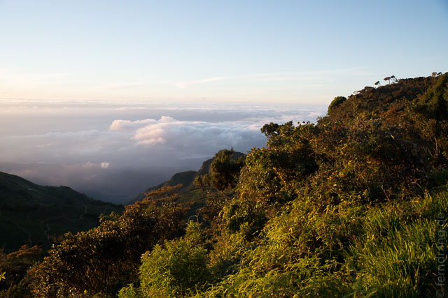
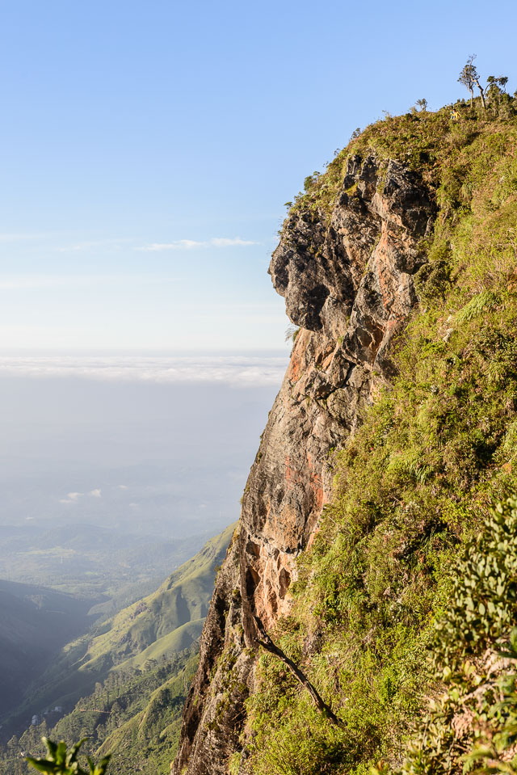
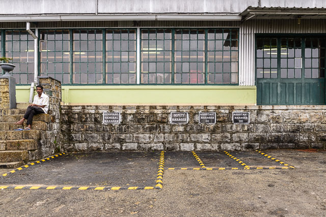

Ein weiteres Highlight in den Highlands ist ein Ausflug zu den "Horton Plains". Das Hochplateau liegt über 2000m hoch. Wegen der üblichen Wolkenzeit zwischen 10 und 11 Uhr morgens, saßen wir schon um 5 Uhr im Auto und sind durch Teefelder und Wälder gekurvt. Der Weg schraubte sich immer höher, bis wir bei Sonnenaufgang eine atemberaubende Aussicht auf eine geschlossene Wolkendecke unter uns hatten, in der die glühenden Hänge verschwanden.
Die Wanderung zum Aussichtspunkt "World's End" führt durch eine schöne Heidelandschaft mit Rhododendren und Farnen. Die Morgensonne schaffte es kaum uns aufzuwärmen. Obwohl man so hoch ist, sehen die sanften Hügel fast nach Flachland aus. Sobald man aber an die Ränder kommt, hat man einen phänomenalen Blick auf die Wolken hunderte Meter unter einem. Der Blick vom Ella Rock kann zwar gut mithalten, aber die Wanderung lohnt sich sehr.
Zurück in Haputale haben wir am Nachmittag eine kurze Busfahrt durch die steilen Teefelder der Umgebung nach Dambattene gemacht. Dort steht eine alte Teefabrik, die Sir Thomas Lipton 1890 gebaut hat. Leider wird am Sonntag Nachmittag nicht gearbeitet, daher war die Führung (in extrem schlechtem Englisch) leider mehr Theorie als Praxis. Dennoch beeindruckend, dass die Pflückerinnen täglich zehntausend Kilo Tee allein in dieser Fabrik abgeben - zumal wir bisher noch in keinem Feld jemanden haben arbeiten sehen.
Mit dem Abend wandern auch die Wolken höher, so dass die Straße fast verschluckt wird. Der Blick reicht kaum dreißig Meter die Hänge herab. Lediglich die unnatürlich auf minimalen Schatten getrimmten Anti-Erosions-Bäume stechen aus dem Wolkentee heraus.